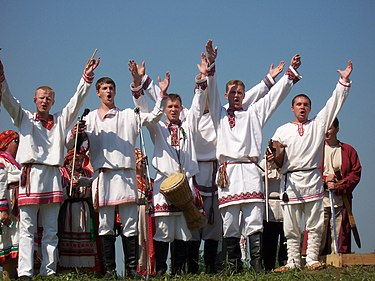

List of music genres: Folk music
There are only four musical styles: folk music, sacred music, academic music and popular music. Each genre has a number of genres of music and each genre has many subgenres.
Music is an integral part of most people's lives. Musical works are listened to in all corners of our planet, even in the most distant ones. Despite the immense popularity and importance of this direction of art, many people do not think over what styles and genres of music exist. This article discusses the TOP-10 musical directions, which even before ours days have not lost their popularity.
Due to the variety of different genres, many of you are wondering: What styles of music are there? We tried to answer your question and organize the main styles of music in a separate list, which according to experts will always be popular despite many years.
Folk music
Musical folklore, traditional music - musical and poetic creativity of the people, integral part of folk art, which, as a rule, exists in oral form, passed down from generation to generation. Since folk music is known to all socio-historical formations (both oral and written), then it should be considered not only as a component of folk art, but also, in a broader sense, as a branch (root) musical art. One of the main branches, which is usually compared to popular and academic music. There is also a definition of the term "folk music" - traditional music of a particular people or culture. Music folklore studies folk music. Johann Gottfried Herder (1744-1803) was one of the first scientists describing folk music from a theoretical point of view. He, like other early researchers, pointed to a direct connection between folk music and nature. In the 19th century, folk music was considered, if not "the music of nature", then at least natural, natural music, unaffected by urban influences. Researchers of that time considered mainly the following questions: is there a connection between classical and folk music, and are traces of the origins and forms of folk music found in language or movement. Of the greatest importance in understanding folk music were musical and ethnographic studies carried out by under the guidance of the American philologist Francis James Child (1825-1896) in Great Britain and the Hungarian composer and folklorist White Bartok (1881-1945) in Eastern Europe